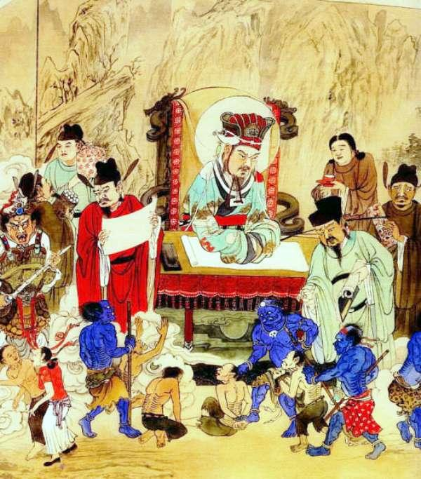

感恩諸佛菩薩！阿玉乘白蓮花出發了。
判官阿彌陀佛！阿玉合十行禮！
今天判官帶我去參觀邪淫地獄之電光眼地獄。此地獄是生前喜歡看色情書籍或看色情網站的眾生，壽終入此地獄受報。來此地獄受報的眾生會根據他們的年齡及觀看的密度來判刑，最低的是地獄報50年，年齡越小的如沉迷判的會更重。
多數人看完色情網站之後都會繼續犯其他邪淫，如手淫或非時、非地、非器等邪行，甚至用助淫工具。看此類色情書籍嚴重破壞人的良好本性，特別是天性純淨的純陽之體小孩子，成人都不應觀看更何況是未成年的孩子。
現在人間有很多青少年都有在電腦上觀看此類色情網站。任何人只要沉迷色欲，必定直接影響其身心靈各方面的健康發展。人每天靠思維意念來生活的。思維意念推動行為，行為造善惡業，善惡業決定命運，命運造成業力，業力產生要受報。
經常看色情網站，人的思維就會昏沉，處事不清晰；特別是小孩影響面特別廣，斷送人身修行的良好機會。所謂色字頭上一把刀，古今中外有多少名人將士，都是過不了色這一關。
判官說：「首先觀看色情書籍或色情網站，每次都會折福折壽；之後進一步再犯其他邪淫，一樣折福折壽，亦等如慢性自殺。」
「現在人間科技發達，小孩子都用電腦，有很多小孩都有看色情網站。有些是家長不知道，因家長自己不懂使用電腦，任由孩子自行學習電腦從不過問，每天工作也非常繁忙，根本無多餘時間打理孩子的事。又或者經濟好些的，就請個工人照顧孩子，工人也未必會照顧的妥當，所以這些家長也會折福，不能說不知道就不理，養不教父之過。家長應該自行關注教育孩子的健康成長。至於有些家長明明知道卻沒制止或當是性教育而放縱孩子觀看。有些還說時代不同了，現在是開放時代，學校都有性教育幼兒必學課程，這是嚴重錯誤的知見。冥府希望這次籍阿玉您參觀地獄之後，回人間告誡有情眾生改邪歸正，珍惜人間數十年的光陰，多做有益世道人心之事，莫做害人害己的勾當；否則一息不來，死後就來見我了！」
已經聽到慘叫聲，原來是電光眼地獄的眾生在受酷刑。此地獄設有很多大型有機關的電腦，一個靈一台電腦；電腦裡面有東西看，每個靈都在看他們的電腦。但不看還好，一看他們就會大聲慘叫。
有個男靈很年輕，像20多歲的樣子；他的電腦會放出鉤子的紅色電光出來，直接鉤住他的雙眼，把眼球向外撕拉出來，一地都是鮮血，男靈顯得極度痛苦悲哀！這個是在網站上看色情電影、圖像及小說等的果報。
判官說，這男靈從小就開始看色情網站，而且還會手淫；因犯的密度高，所以一生的福報很快就折損完畢而墮落到地獄來了，他的父母還在人間叫喊著痛失愛兒。
旁邊有個罪靈坐在一張桌子上看色情書，與剛才鉤眼果報同樣刑罰一樣嚴重，但受報的速度慢一點。我請教判官為何受刑速度會有所不同呢？
判官說：「因為用電腦看色情網站的，一般會在短時間內看的量多，時間上相對也很長；而看色情書籍畫報及小說等，卻是有限的那幾本色情書而已。如果眾生在生時看的不多而後來覺悟，懺悔以後不再重犯，而且反過來大力宣傳此勸善文章，勸導眾生不再看色情網站、光碟及色情書籍，用自身金錢盡力買下色情書籍及光碟等燒毀，將功補過的話，則可免受地獄果報。」
判官嚴厲地說：「在電光眼地獄受報的眾生，一般都還需去其他邪淫地獄繼續受刑。犯手淫、犯非時、非地、非器等罪的，死後決定要被打入吞鐵丸、抱銅柱、煙花翻滾等等地獄及其他形形色色的非器地獄之中受刑。」
今天暫時到此，拜別判官！
阿玉合十向判官行禮，感恩判官！乘白蓮花回去了。
色情網站及光碟真是害人不淺，各種大地獄中的血腥味，完全令阿玉難以承受。參觀各種大地獄看了那麼多罪靈被鬼卒砍頭斬手、割肉切腳、大嘶大叫的恐怖血腥場面，阿玉回家後，心理上都要作重新調整一番，方才回復過來呢！
轉載《陰律無情》